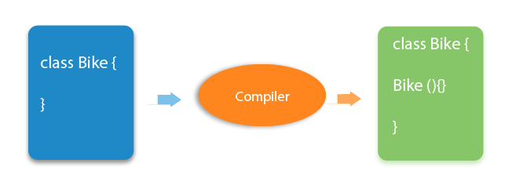

There is given more than 50 OOPs (Object-Oriented Programming and System) interview questions. However, they have been categorized in many sections such as constructor interview questions, static interview questions, Inheritance Interview questions, Abstraction interview question, Polymorphism interview questions, etc. for better understanding.
The Object is the real-time entity having some state and behavior. In Java, Object is an instance of the class having the instance variables as the state of the object and the methods as the behavior of the object. The object of a class can be created by using the new keyword.
There are the following basic differences between the object-oriented language and object-based language..
The constructor can be defined as the special type of method that is used to initialize the state of an object. It is invoked when the class is instantiated, and the memory is allocated for the object. Every time, an object is created using the new keyword, the default constructor of the class is called. The name of the constructor must be similar to the class name. The constructor must not have an explicit return type.
Based on the parameters passed in the constructors, there are two types of constructors in Java
The purpose of the default constructor is to assign the default value to the objects. The java compiler creates a default constructor implicitly if there is no constructor in the class.
The output of the above code:
Explanation: In the above class, you are not creating any constructor, so compiler provides you a default constructor. Here 0 and null values are provided by default constructor.
yes, The constructor implicitly returns the current instance of the class (You can't use an explicit return type with the constructor).
No, The constructor is not inherited.
The static variable is used to refer to the common property of all objects (that is not unique for each object), e.g., The company name of employees, college name of students, etc. Static variable gets memory only once in the class area at the time of class loading. Using a static variable makes your program more memory efficient (it saves memory). Static variable belongs to the class rather than the object
For example, In the class simulating the collection of the students in a college, the name of the college is the common attribute to all the students. Therefore, the college name will be defined as static
No, we can't override static methods.
Yes, we can declare static variables and methods in an abstract method. As we know that there is no requirement to make the object to access the static context, therefore, we can access the static context declared inside the abstract class by using the name of the abstract class.
The this keyword is a reference variable that refers to the current object. There are the various uses of this keyword in Java. It can be used to refer to current class properties such as instance methods, variable, constructors, etc. It can also be passed as an argument into the methods or constructors. It can also be returned from the method as the current class instance.
Constructor chaining enables us to call one constructor from another constructor of the class with respect to the current class object. We can use this keyword to perform constructor chaining within the same class.
Inheritance is a mechanism by which one object acquires all the properties and behavior of another object of another class. It is used for Code Reusability and Method Overriding. The idea behind inheritance in Java is that you can create new classes that are built upon existing classes. When you inherit from an existing class, you can reuse methods and fields of the parent class. Moreover, you can add new methods and fields in your current class also. Inheritance represents the IS-A relationship which is also known as a parent-child relationship.
There are five types of inheritance in Java.
There are various advantages of using inheritance in Java that is given below.
To reduce the complexity and simplify the language, multiple inheritance is not supported in java. Consider a scenario where A, B, and C are three classes. The C class inherits A and B classes. If A and B classes have the same method and you call it from child class object, there will be ambiguity to call the method of A or B class.
Since the compile-time errors are better than runtime errors, Java renders compile-time error if you inherit 2 classes. So whether you have the same method or different, there will be a compile time error.
The output of the above code:
The pointer is a variable that refers to the memory address. They are not used in Java because they are unsafe(unsecured) and complex to understand.
The super keyword in Java is a reference variable that is used to refer to the immediate parent class object. Whenever you create the instance of the subclass, an instance of the parent class is created implicitly which is referred by super reference variable. The super() is called in the class constructor implicitly by the compiler if there is no super or this.
The output of the above code:
There are the following differences between this and super keyword.
Method overloading is the polymorphism technique which allows us to create multiple methods with the same name but different signature. We can achieve method overloading in two ways.
Method overloading increases the readability of the program. Method overloading is performed to figure out the program quickly.
In Java, method overloading is not possible by changing the return type of the program due to avoid the ambiguity.
The output of the above code:
No, We cannot overload the methods by just applying the static keyword to them(number of parameters and types are the same). Consider the following example.
The output of the above code:
Yes, we can have any number of main methods in a Java program by using method overloading.
If a subclass provides a specific implementation of a method that is already provided by its parent class, it is known as Method Overriding. It is used for runtime polymorphism and to implement the interface methods.
Rules for Method overriding:
No, you can't override the static method because they are the part of the class, not the object.
It is because the static method is the part of the class, and it is bound with class whereas instance method is bound with the object, and static gets memory in class area, and instance gets memory in a heap.
No, we cannot override the private methods because the scope of private methods is limited to the class and we cannot access them outside of the class.
Yes, we can change the scope of the overridden method in the subclass. However, we must notice that we cannot decrease the accessibility of the method. The following point must be taken care of while changing the accessibility of the method.
| Method Overloading | Method Overriding |
|---|---|
| Method overloading increases the readability of the program. | Method overriding provides the specific implementation of the method that is already provided by its superclass. |
| Method overloading occurs within the class. | Method overriding occurs in two classes that have IS-A relationship between them. |
| In this case, the parameters must be different. | In this case, the parameters must be the same. |
Yes, we can modify the throws clause of the superclass method while overriding it in the subclass. However, there are some rules which are to be followed while overriding in case of exception handling.
In Java, the final variable is used to restrict the user from updating it. If we initialize the final variable, we can't change its value. In other words, we can say that the final variable once assigned to a value, can never be changed after that. The final variable which is not assigned to any value can only be assigned through the class constructor.

If we change any method to a final method, we can't override it.
Yes, if it is not static, we can initialize it in the constructor. If it is static blank final variable, it can be initialized only in the static block.
Yes, We can declare the main method as public static final void main(String[] args){}.
The constructor can never be declared as final because it is never inherited. Constructors are not ordinary methods; therefore, there is no sense to declare constructors as final. However, if you try to do so, The compiler will throw an error.
No, we cannot declare an interface as final because the interface must be implemented by some class to provide its definition. Therefore, there is no sense to make an interface final. However, if you try to do so, the compiler will show an error.
The main difference between the final method and abstract method is that the abstract method cannot be final as we need to override them in the subclass to give its definition.